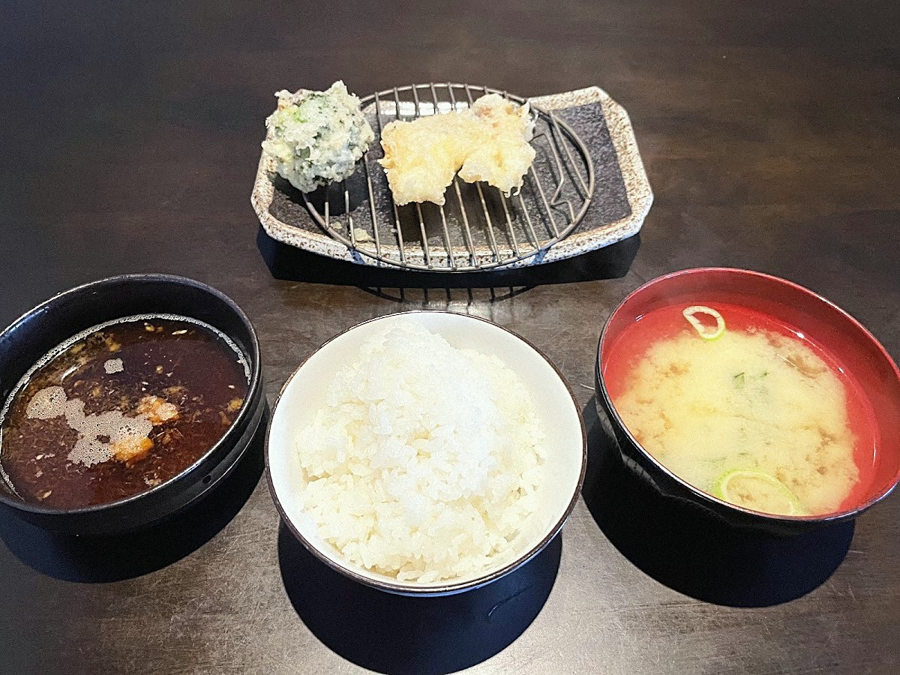

注文を受けてから揚げ、できたてを一品ずつ運ぶ。
遠賀町で十七年続く、天ぷらの昼ごはんです。

まとめて出さず、揚がったものから順に一品ずつお席へ運びます。熱々をいちばんおいしい状態で味わっていただくための、この店の提供スタイルです。「油も重たくなく、カラッと軽い」とお客様に評される揚げ上がりも持ち味です。
コース・定食には、ごはん、味噌汁、高菜がつき、おかわりは自由です。名物のイカの塩辛は、おひとり様一皿まで。それでも注文の多い一品です。
珍しいブロッコリーの天ぷらは、この店ならではの名物。とろりと半熟に揚げた卵の天ぷらも、追加注文の多い一品です。
お車でお越しの方へ。店舗の前に駐車場がございます（無料）。お店は交差点の角にあり、店舗正面の木の看板とピンクの垂れ幕が目印です。場所が分からないときは、お電話いただければご案内します。

※ 案内図は位置関係を示すイメージです。台数・区画は目安としてご覧ください。